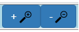
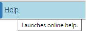

The Toolbar is located at the top of the window. It contains tool buttons which launches dialogs, display dropdowns, or activate commands. It is possible to see the function of each tool button by hovering over it and reading the tool tip.
File
Displays a drop-down list of commands:
- Save Saves the plot to a file on your system hard drive.
- Curve settings Launches a dialog through which the various attributes of a curve can be changed.
- Plot settings Launches a dialog through which the various attributes of the plot can be changed.
- Function Launches the dialog used for the specification of a function and the configuration of a curve of the said function.
- Calculator Launches an on-line scientific calculator.
- Print Prints the plot. The tool-bar and side-bar is not printed.
|
|
Choose Files
Launches your system's file explorer. From the explorer, you select the table file to be uploaded to the grapher. (see Plotting From Data File)
|

|
Auto-Pan-Zoom
A radio button group that enables and disables specific modes. None or, at most, one of the modes can be enabled at any time.
- Auto This is the default mode. In this mode, the scales used are calculated by the grapher. The scales allow the full extent of all curves to be visible. Changing the scales by other user actions with the grapher (e.g. zooming in or out), will cause the Auto mode to be disabled.
- Pan When selected, all plot items (curves, symbols, rulers, etc.) on the plot can be dragged to a new location. You hold down the left mouse button when dragging plot items.
- Zoom When selected, a plot can be quickly zoomed. You hold down the left mouse button and drag to display a zooming rectangle. When the mouse button is released, the grapher re-calculates the scales so that the contents of the zooming rectangle occupy the entire plot. The zoomed state is saved on a zoom stack by the grapher. You cycle through the zoom stack as follows: Use the Esc key to return to the base of the stack (i.e. the state before the first zoom). Use the shift + middle mouse-button to go one level up the stack. Use the middle mouse-button to go one level down the stack.
|

|
View
Displays a drop-down list of commands:
- Point selection Enables / disables point selection. Note: Enabling Point selection turns on mouse tracking which may affect the grapher's performance. Only enable this feature when needed and disable it immediately after.
- Left axis Enables / disables the left axis.
- Bottom axis Enables / disables the bottom axis.
- Right axis Enables / disables the right axis.
- Top axis Enables / disables the top axis.
- Major gridlines Enables / disables Major grid lines. Note: Minor gridlines cannot exist without Major gridlines. Thus, disabling Major gridlines automatically disables Minor gridlines.
- Minor gridlines Enables / disables Minor grid lines. Note: Minor gridlines cannot exist without Major gridlines. Thus, Minor gridlines option is only available if Major gridlines are enabled.
- Title Displays any defined title.
- Footer Displays any defined footer.
- Legend Displays / hide the legend. Note: The legend will not show if the plot contains no curves.
- Sidebar Displays / hide the sidebar. Note: The sidebar will not show if the plot contains no visible curves.
|

|
+ and -
Zoom in and out. The keyboard short-cuts are Shift modifier and the + key or Shift modifier and the - key
|

|
Watch
Displays a drop-down list of commands:
- Curve name Enables / disables curve name watch.
- Left ruler position Enables / disables Left ruler position watch.
- Right ruler position Enables / disables Right ruler position watch.
- Bottom ruler position Enables / disables Bottom ruler position watch.
- Top ruler position Enables / disables Top ruler position watch.
- Slope at left ruler Enables / disables slope watch.
- Area below the curve Enables / disables area watch.
- Volume of revolution(X) Enables / disables volume watch.
Note: Slope, Area and Volume watches require the grapher to perform calculations that can be time consuming . Only enable these features when needed and disable them immediately after.
|

|
Help
Launches the user manual you are currently reading.
|

|
Created with the Personal Edition of HelpNDoc: Easily create HTML Help documents